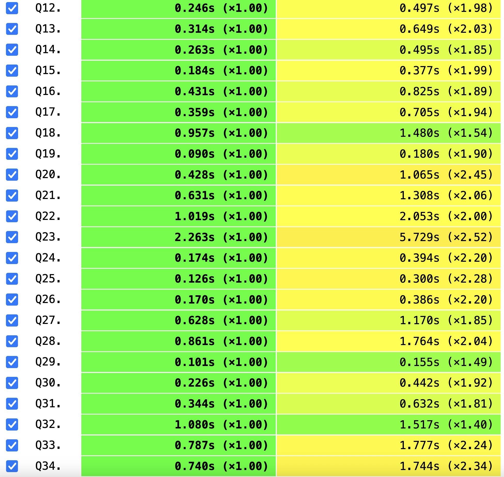
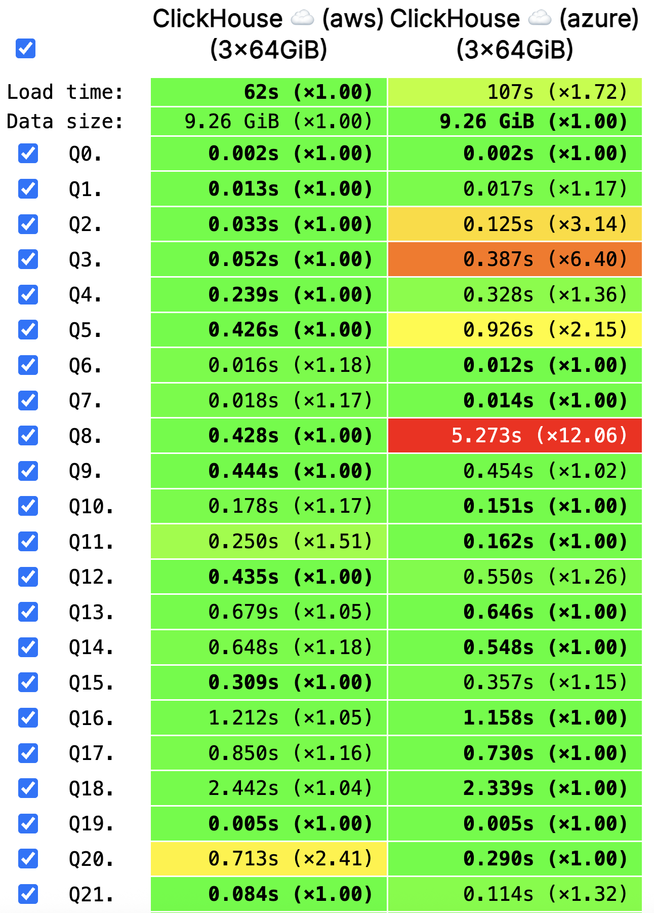
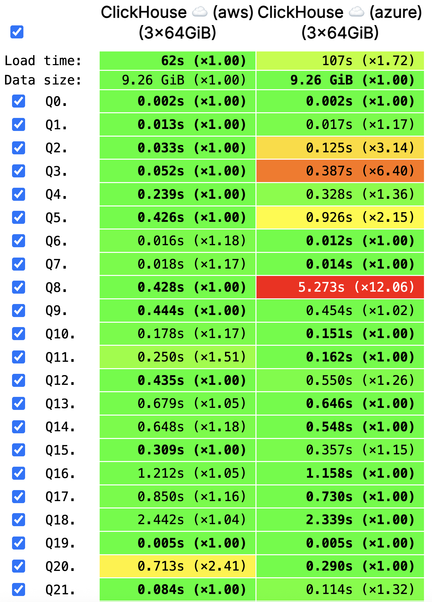
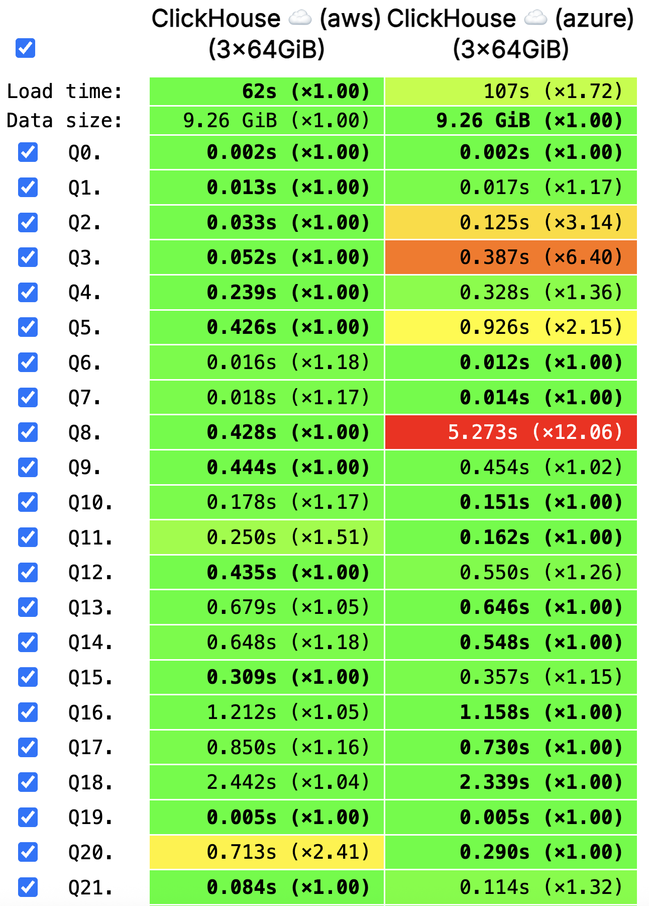

We have 251 new features in the first 11 months of 2025.
Which one is your favorite?
Lightweight Updates
Full-featured UPDATE statement:
UPDATE my_table
SET col1 = val1, col2 = val2, ...
WHERE condition
UPDATE hits SET Title = 'Updated Title'
WHERE EventDate = today();
UPDATE wikistat SET hits = hits + 1, time = now()
WHERE path = 'ClickHouse';
Developer: Anton Popov.
Lightweight Updates
Supported for MergeTree, ReplacingMergeTree, CollapsingMergeTree,
including Replicated tables.
Performance of an UPDATE is similar to
INSERT SELECT with the same columns and conditions.
UPDATE creates a patch part referencing the modified records.
Patch parts are applied on read and during background merges.
SELECTs performance after an update:
Two times faster than on-the-fly mutations.
Only 20% overhead compared to fully updated data.
Developer: Anton Popov.
Lightweight Updates
Performance of UPDATEs:
Lightweight Updates
Bonus:
SET lightweight_delete_mode = 'lightweight_update';
Developer: Anton Popov.
Text Index 🧪
A full-text search index in ClickHouse!
— In development since 2022
— first prototype in 2023 (by Harry Lee and Larry Luo) — now rewritten to make it to production — experimental in 25.9
— beta in 25.12
Developers: Anton Popov, Elmi Ahmadov, Jimmy Aguilar Mena.
Text Index 🧪
CREATE TABLE text_log
(
message String,
...
INDEX inv_idx(message)
TYPE text(tokenizer = 'splitByNonAlpha')
GRANULARITY 128
)
ENGINE = SharedMergeTree ORDER BY id;
SELECT ... WHERE hasToken(message, 'DDLWorker');
SELECT ... WHERE hasAllTokens(message, ['peak', 'memory']);
SELECT ... WHERE hasAnyTokens(message, tokens('01442_merge_detach_attach'));
Developers: Anton Popov, Elmi Ahmadov, Jimmy Aguilar Mena.
Text Index (50 TB logs demo)
Developers: Anton Popov, Elmi Ahmadov, Jimmy Aguilar Mena.
Vector Index
In development since 2021. Production-ready since 25.8.
ALTER TABLE dbpedia
ADD INDEX vector_index(vector)
TYPE vector_similarity(
'hnsw', 'cosineDistance', 1536, 'bf16', 64, 512);
ALTER TABLE dbpedia MATERIALIZE INDEX vector_index;
WITH ... AS reference_vector
SELECT ... FROM table WHERE ...
ORDER BY cosineDistance(vector, reference_vector)
LIMIT 10;
Developer: Shankar Iyer.
Vector Search
22.9 — experimental version
Introduced by Arthur Filatenkov, Vladimir Makarov, Danila Mishin,
Nikita Vasilenko, Alexander Piachonkin, Nikita Evsiukov, Hakob Sagatelyan.
25.8 — GA (index-only reading, fetch multiplier, binary quantization)
Developer: Shankar Iyer.
Vector Index
HNSW algorithm with quantization options (bf16, i8, b1).
Supports different filtering modes: post-filtering (run ANN search, then apply other filters) or pre-filtering (apply regular filters, then run ANN across filtered results).
Supports filtering multiplier (e.g., find 100 nearest candidates to filter and return 10).
Avoids reading the data column if not necessarily.
Developer: Shankar Iyer.
QBit Data Type 🧪
A data type for vector embeddings,
that allows tuning the search precision at runtime.
CREATE TABLE vectors (
id UInt64, name String, ...
vec QBit(BFloat16, 1536)
) ORDER BY ();
SELECT id, name FROM vectors
ORDER BY L2DistanceTransposed(vector, target, 10)
LIMIT 10;
Developer: Raufs Dunamalijevs.
QBit Data Type 🧪
It uses a bit-sliced data layout:
every number is sliced by bits,
e.g., for 1536-dim vector of Float32,
we store 32 subcolumns with Nth (0..31th) bits from all dimensions.
At the query time, we specify, how many (most significant) bits to take.
For example, we can ask to read
only 10 out of 32 bits.
Developer: Raufs Dunamalijevs.
Data Lakes
Every Data Lake Catalog
ClickHouse supports database engines for:
— Unity catalog (since 25.3);
— REST, Polaris catalog (since 24.12);
— Glue catalog (since 25.3);
— Hive Metastore catalog (since 25.5);
— Microsoft OneLake (since 25.11);
Every Data Lake Format
ClickHouse supports table engines for:
— Iceberg;
— Delta Lake;
— Apache Paimon;
With every compatibility and performance features for Iceberg.
Performance
Parquet Reader v3
A new, faster implementation of Parquet from scratch!
Developer: Michael Kolupaev.

Query Condition Cache
With the Query Condition Cache, ClickHouse will remember,
which ranges of granules in data parts satisfy the condition in WHERE,
and reuse this information as an ephemeral index for subsequent queries.
SET use_query_condition_cache = 1;
Lazy Reading
Instead of reading data for a column, track the information about what data should be read. Then read the data only when needed.
The column values can be carried around, filtered, but not used in calculations before the latest stages of the query pipeline.
Developer: Xiaozhe Yu.
JOIN Reordering
Reordering of the JOIN graph, based on the amount of data to read
and on the column-level statistics.
:) SET query_plan_optimize_join_order_limit = 10;
:) SET allow_statistics_optimize = 1;
Developer: Vladimir Cherkasov.
JOIN Reordering
Developer: Vladimir Cherkasov.
Speculative Retries For Azure

Developer: Alexander Sapin.
Speculative Retries For Azure
The problem: rare spikes of latencies up to 5 sec, 10 sec, 15 sec, ...
The reason: AWS S3 and Azure are complex distributed systems with their own shenanigans.
This problem was solved for AWS and GCP a few years ago with:
— using multiple connections to multiple endpoints;
— rotating endpoints for better distribution of the load;
— running a second request as soon as there is a soft timeout;
— do many retries aggressively;
Speculative Retries For Azure
The problem: rare spikes of latencies up to 5 sec, 10 sec, 15 sec, ...
Problem solved:
Replacing the HTTP client in Azure SDK to our implementation.
Reusing the same logic of aggressive retries as for AWS S3.
Point, LineString, MultiLineString, Ring, Polygon, MultiPolygon
Since 25.11, we also have one unified data type: Geometry
— it can contain any geometry!
New functions, readWkt, readWkb,
which read any type of geometry as a Geometry value.
ClickHouse also supports H3 and S2 indexes, Geohashes, optimized spherical and geo distances, Polygonal dictionaries for reverse geocoding, SVG rendering...
Developer: Konstantin Vedernikov.
Auto Increment
CREATE TABLE test
(
id UInt64 DEFAULT generateSerialID('test'),
data String
)
ORDER BY id;
INSERT INTO test (data) VALUES VALUES ('Hello'), ('World');
The new, generateSerialID function implements named distributed counters
(stored in Keeper), which can be used for auto-increments in tables.
It is fast (thanks to batching) and safe for parallel and distributed operation.
Developer: Alexey Milovidov.
Interfaces
SSH Interface
ClickHouse server supports many interfaces:
— native;
— HTTP;
— GRPC;
— MySQL compatibility;
— PostgreSQL compatibility;
— ZooKeeper;
Now it also implements the SSH protocol,
so any SSH client can connect to it directly.
Developer: George Gamezardashvili, Nikita Mikhailov.
SSH Interface
Try this:
ssh play@play.clickhouse.com
Thanks to the embedded SSH server, the interactive ClickHouse experience
is now available from any platform, including Windows, Android, iPad...
Integration With Arrow Flight 🧪
Arrow Flight — a protocol for data exchange in the Apache Arrow format over GRPC.
Good for column-oriented databases as it keeps the data in the column representation
(similar to the ClickHouse native protocol).
Now ClickHouse can query other Arrow Flight data sources with the arrowflight table function.
And ClickHouse can work as an Arrow Flight server by itself.


 
